Project Explorer¶
Images and models are added to the application using the Project Explorer.
2D texture image files are displayed in two levels, original source image is shown on the left (branch item) and destination image(s) (sub items) are shown on the right using a tree view outline.
3D model files (only support .obj and .gltf with .bin) are displayed in three levels, original model is shown on the left (branch item) and destination model is shown as 2nd level sub item while the mesh/textures within the model is shown as 3rd level item of the tree view.
Projects¶
The application uses a project based concept, where 2D texture images are added to the Project Explorer tree view as original image items in which settings are applied using a destination item. Each original 2D texture image item can have multiple destination items. A destination item can be set to generate a file with a specified format (compressed, decompressed or transcoded) and extension (DDS, KTX, BMP, etc.)
While for 3D model items, they are added to the Project Explorer tree view as original model items, in which multiple model destination settings can be added as 2nd level tree which create multiple resulted model items, the 3rd level destination setting which applied to the mesh/texture items within the model can only be added once per mesh/texture item.
Multiple destination items can be processed at the same time.
Projects can be loaded, created and saved to disk at any time.
Sample Projects¶
These samples can be accessed either from the Welcome Page or from the sample projects folder
Compressonator\Projects
| BC7_Compression.cprj | Project file demonstrating compression using BC7 on images with source extension formats of BMP, PNG, TGA and TIF |
|---|---|
| BC6H_Compression.cprj | Project file demonstrating compression using BC6H on a high dynamic range image (OpenEXR) file extension format of (EXR) |
Processing Ruby.bmp sample using BC7 Compression
- On the Welcome Page tab window as shown in the view below, click on “BC7_Compression”
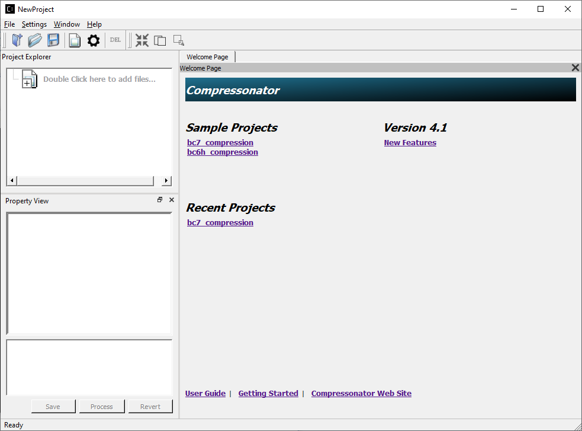
The Project Explorer will change and show some sample images and settings from the BC7 Compression sample project:
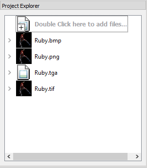
- Select the image by clicking on the name (for example, Ruby.bmp), the Properties View will now display information on the selected image’s location, various sizes, dimensions, etc.
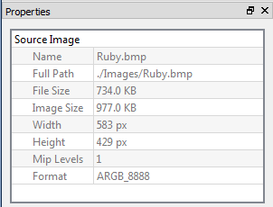
- Now click on the right arrow next to the Ruby.bmp.
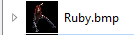
This expands the view and you will see a clickable “Add destination settings …” line and a BC7 pre-compressed destination sample Ruby_bmp_1.
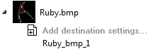
- Click on Ruby_bmp_1, and notice that the Property View changed (as shown below) to indicate what settings has been preset for Ruby_bmp_1

Note that Compression Ratio and Compression Time both show “Unknown” and “Not Processed”. These values will be updated when the destination file is created during processing.
- Click on the Process button located in the Properties View. Two new windows will open a Progress Window and a Message Output window. When processing is complete the progress window will close and the Output window will show a result.
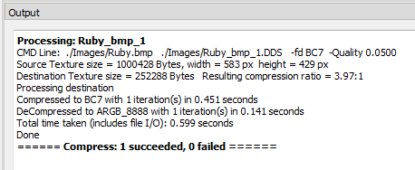
Notice also that there is a green circle next to Ruby_bmp_1, indicating that a compressed file has been created and the process was successful.
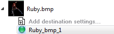
- To view the resulting file, double click on Ruby_bmp_1
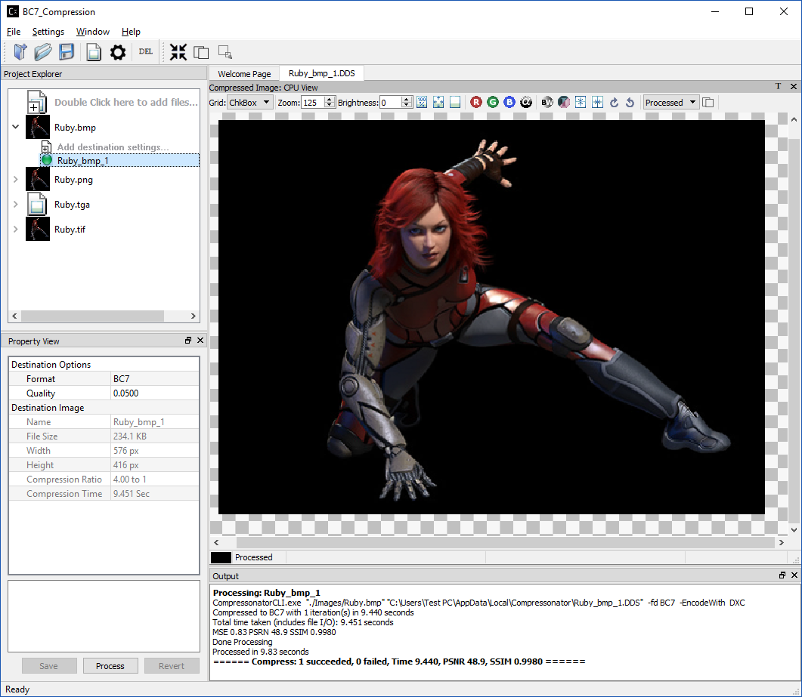
Add Destination Settings¶
To add new destination settings a for specific original image (branch item), expand its branch and select Add destination settings… by double clicking on it.
A new window will be displayed
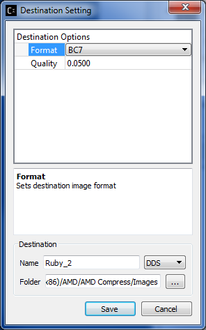
Add Destination Settings Window
Once you have set the desired options, the destination file name and folder; select save. This will now add the new item to the Project Explorer view.
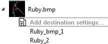
Note: In some cases, a red circle with a cross is displayed indicating that a file already exists and will be overwritten with the new settings. The current release does not check for duplications during setting.
Using Codec Quality Settings¶
BC1, BC2, and BC3 have discrete quality settings, These settings are available in the following ranges (varying the q setting in these ranges will have no new effects, q is a discrete coarse setting)
q = 0.0 to 0.01 sets lowest quality and fast compression
q = 0.101 to 0.6 sets mid-quality
q = 0.601 to 1,0 set the best quality and low performance
BC4 and BC5 have no quality settings, no changes in quality will occur if set.
BC6 & BC7 have full q ranges from 0 to 1.0
Setting Global Quality Settings¶
Users can override all individual destination compression settings, using a globally set value before processing
Currently, only the quality settings can be overwritten with a new global setting.
The process is as follows:
On the project explorer click on “Double Click Here to add files”
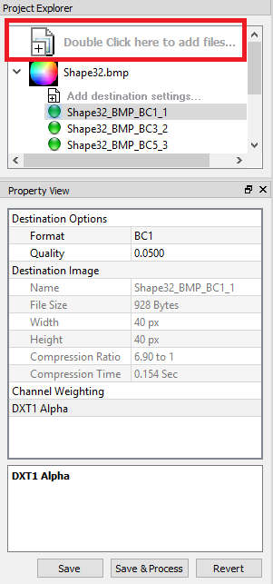
A new property view will be displayed
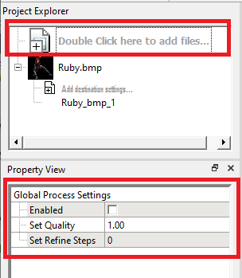
Set a new Quality value to override all existing quality settings for textures in the project explorer, a value of 0 with restore the old values and disable the global settings
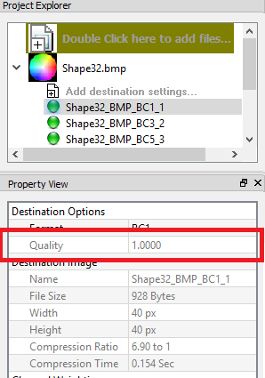
When an override is set the textures will display the new override setting and disable its editing features.
Notice also that the “Double Click Here to add files” background color has also changed to indicate that an override setting is in effect, it will return to a white background if the override settings are turned off.